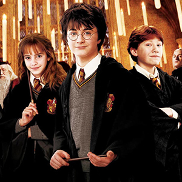

| ГЛАВНАЯ | О САЙТЕ |
Фэнтези — жанр современного искусства, разновидность фантастики. Фэнтези основывается на использовании мифологических и сказочных мотивов в современном виде. Жанр сформировался примерно в начале XV века. В середине XX века наиболее значительное влияние на формирование современного облика классического фэнтези оказали английские писатели Джон Рональд Руэл Толкин, автор романа «Властелин колец» и Клайв Стейплз Льюис (Хроники Нарнии).
Произведения фэнтези нередко напоминают историко-приключенческий роман, действие которого происходит в вымышленном мире, близком к реальному Средневековью или (реже) эпохе Возрождения, герои которого сталкиваются со сверхъестественными явлениями и существами. Зачастую фэнтези построено на основе архетипических сюжетов.
В отличие от научной фантастики, фэнтези не стремится объяснить мир, в котором происходит действие произведения, с научной точки зрения. Сам этот мир существует гипотетически, часто его местоположение относительно нашей реальности никак не оговаривается: это может быть как параллельный мир, так и другая планета, а его физические законы могут отличаться от земных. В таком мире допустимо существование богов, магии, мифических существ вроде драконов, великанов, фей и т. д. В то же время, принципиальное отличие фэнтези от сказок заключается в том, что чудеса в фэнтези являются нормой описываемого мира и действуют так же системно, как и законы природы в реальном мире.
Здесь мы расскажем интересные факты о самых известных представителях фэнтези в кино.
| Гарри Поттер | Властелин колец | Хроники Нарнии |
|---|---|---|
|  |